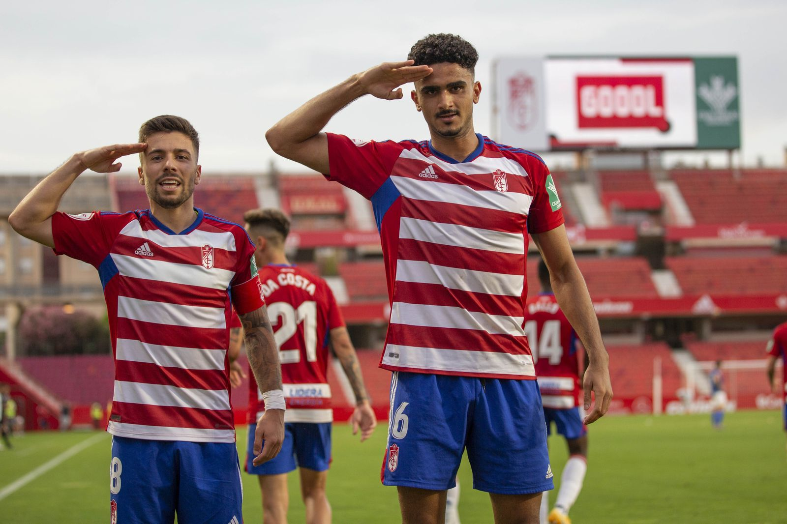
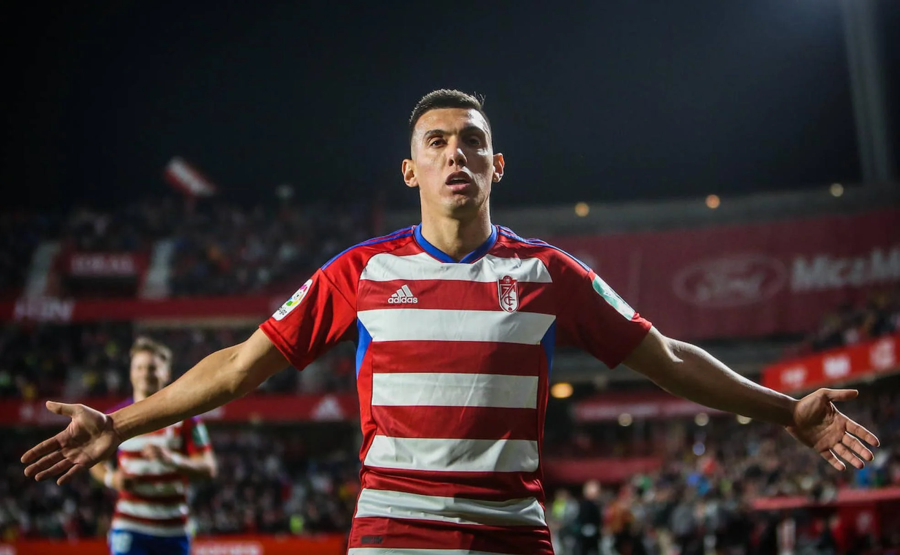
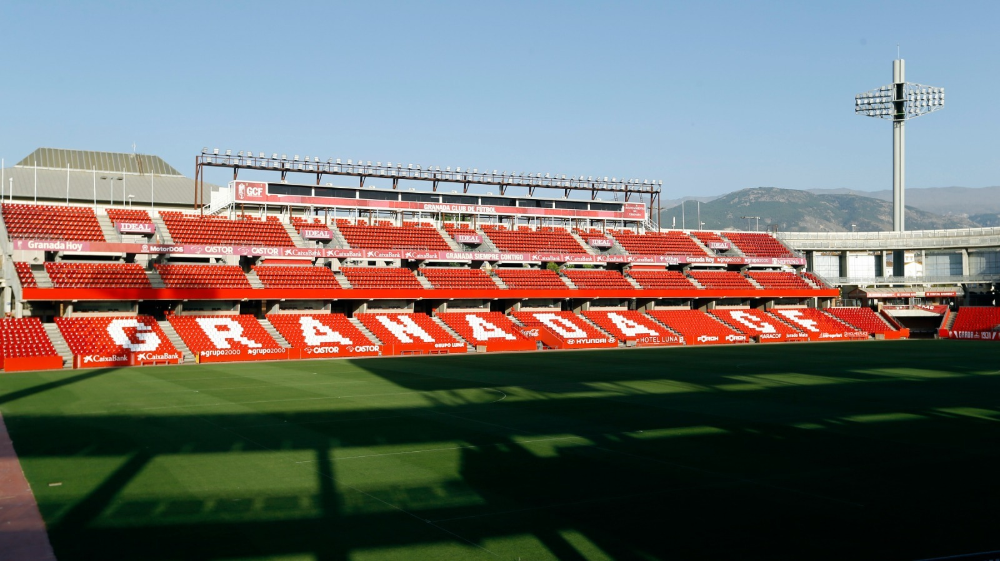
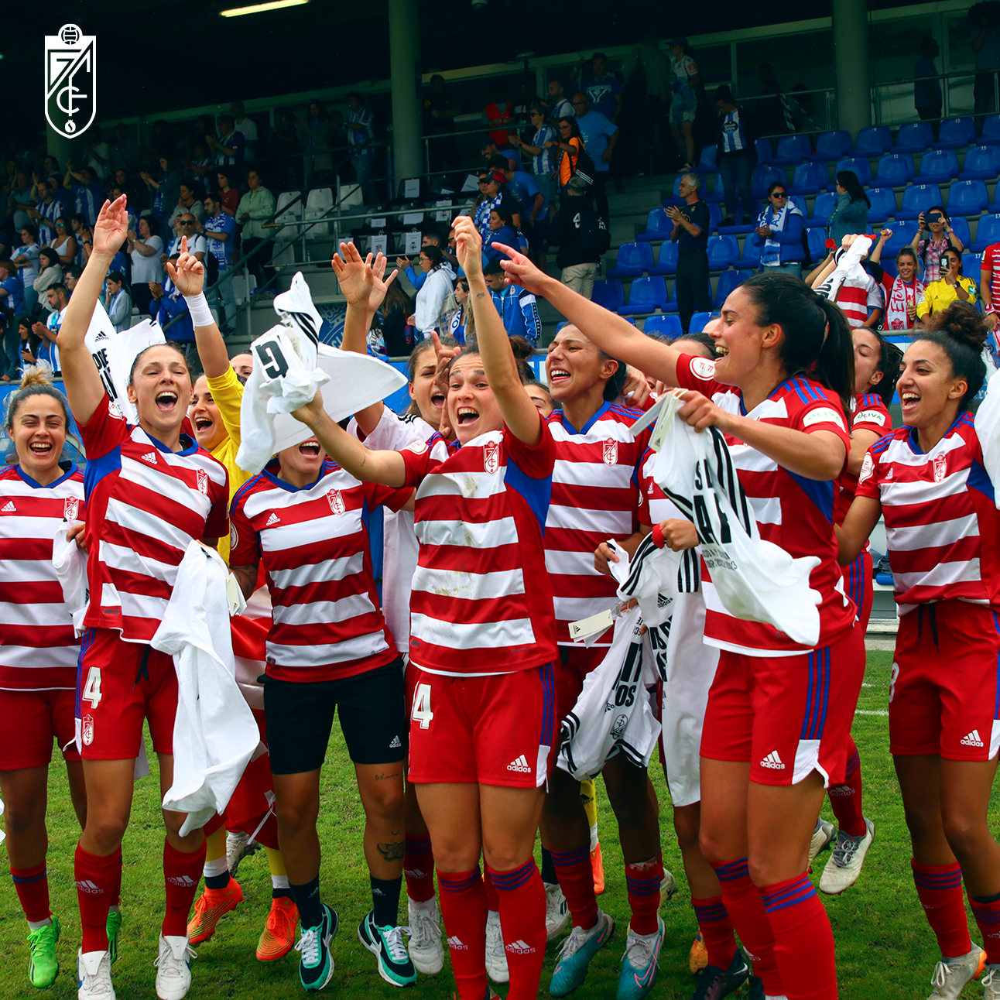
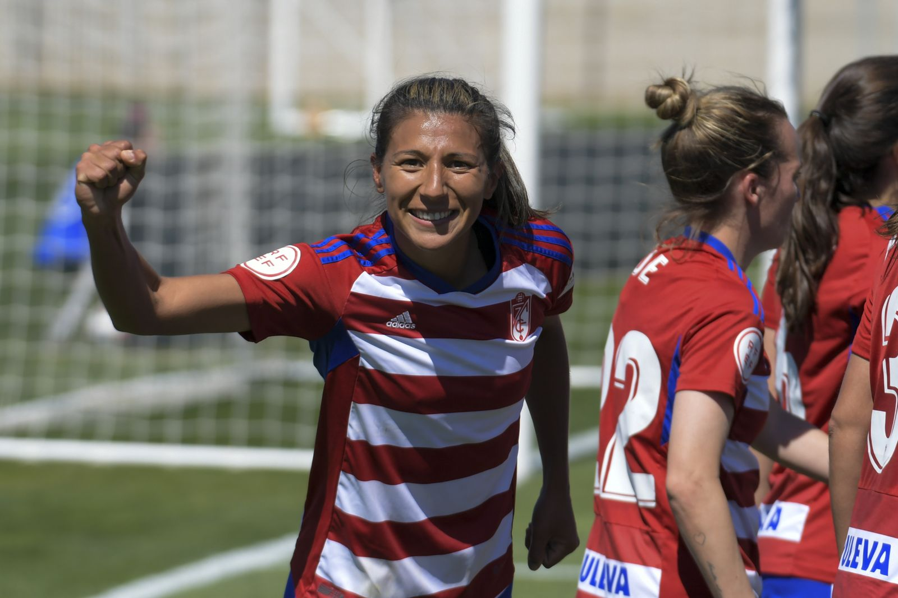
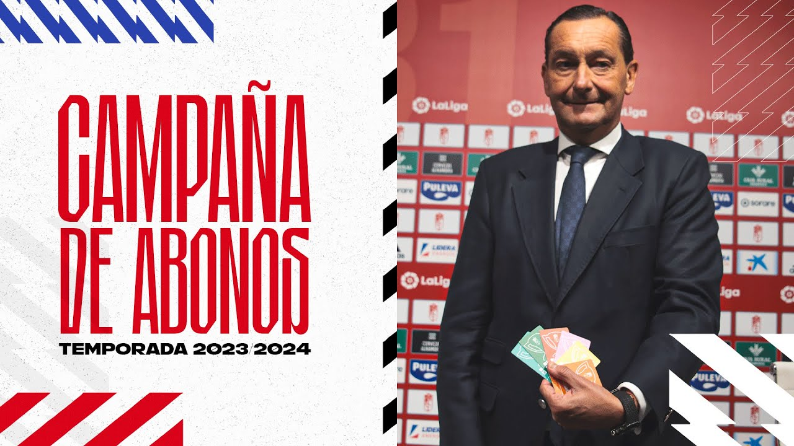
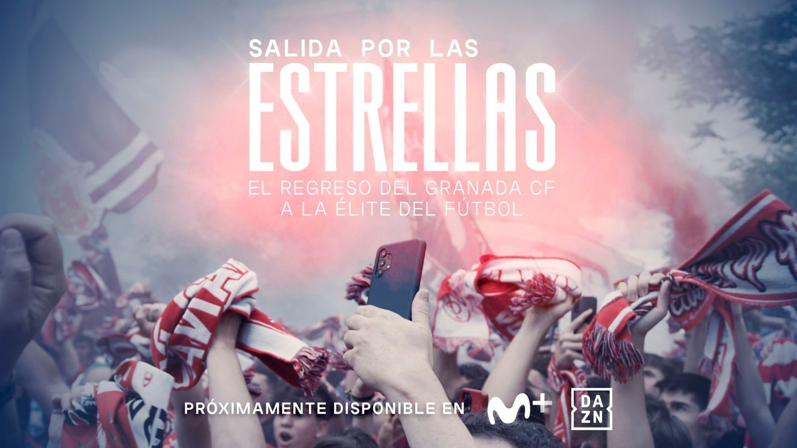

▶ Audiovisual Production
Granada CF
Media Production
Audiovisual production and digital content support for a professional football club — including matchday coverage, editing, photography, and social media content.
Audiovisual production and digital content support for a professional football club — including matchday coverage, editing, photography, and social media content.
Granada CF is a professional football club with an active digital presence across social media, matchday coverage, and institutional communication.
I worked alongside the club's media team supporting audiovisual production and content creation across different teams and departments.
My work included filming, video editing, photography support, and preparing visual content for social media, matchdays, and club communication.
I worked as part of the club's media workflow, supporting audiovisual production across matchdays, training sessions, live events, and digital content.
The work focused on supporting the club’s media output during matches, training sessions, and digital campaigns — often under tight deadlines and fast-paced conditions.
Recording matchday footage, training sessions, press conferences, and behind-the-scenes content for the club’s digital platforms.
Editing short-form videos, match highlights, and visual assets adapted for social media and club communication.
Preparing and exporting content in different formats for quick publication across the club’s digital channels.
A curated selection of audiovisual content produced within Granada CF’s media workflow, covering matchdays, institutional communication, and digital campaigns across multiple teams and formats.







A lean, professional toolkit optimised for speed and quality in live sports environments — from capture through to final delivery.
During the season, I worked across different types of club content and environments, from senior football matches to community and youth-focused productions.
The work included coverage for the men's and women's teams, recreational squads, training sessions, and smaller promotional activities connected to the club.
One of the projects also involved filming promotional content with children at a local school as part of a club outreach initiative. The experience exposed me to different kinds of productions, from competitive matches and training sessions to smaller community-focused content around the club.